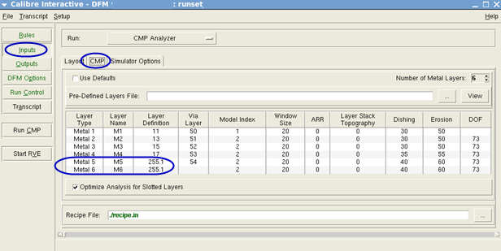
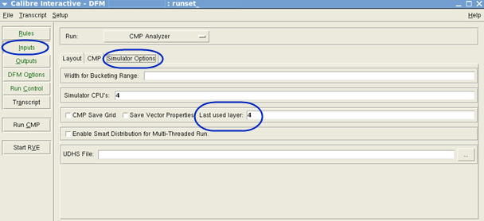

Create a
modified runset in the Calibre Interactive GUI for the Calibre CMPAnalyzer
rerun flow when new layers are added to your design after CMP analysis.
Procedure
- From a command line, set the following environment
variable according to your shell environment:
setenv CMP_ENABLE_RERUN_SIMULATION 1
This keeps the necessary data during the original
DFM database creation for further re‑extraction and simulation.
- Open the runset file in the Calibre Interactive
for DFM GUI.
calibre -gui ‑dfm original_runset
- In the Inputs pane, select CMP
Analyze in the Run menu.
- Click the CMP tab
to display the layer table.
Enter placeholder layer
definitions in the table for the layers that you plan to add (any
existing layer in the design can be a placeholder).
Figure 1. CMP Placeholder Layers
- Click the Simulator
Options tab and set the Last
used layer field.
This is the last layer
number that the original extraction and simulation should run.
Figure 2. Last Used Layer Setting
- Click Run CMP to
run the analysis.
- Add the new layers to your design and update
the layer table in the CMP tab
with the new layer definitions (replacing the placeholders).
- Update the Last used
layer number according to the added layers and save
the modified runset.
- Perform the Calibre CMPAnalyzer rerun flow using
your modified runset to re‑extract and simulate the new layers.
See “Performing the Calibre CMPAnalyzer Rerun Flow”.